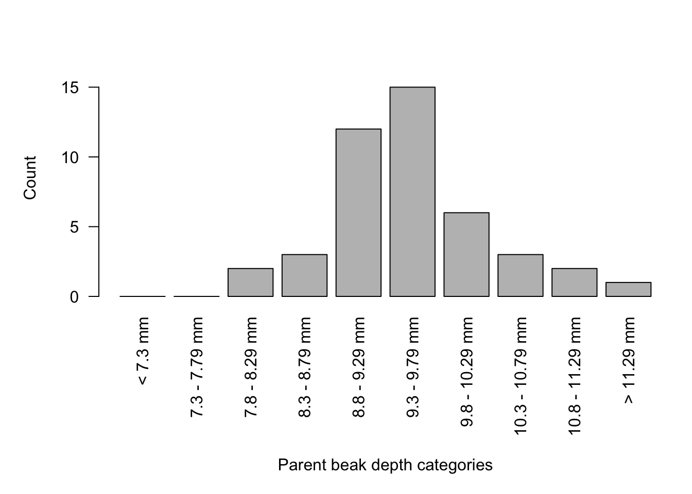

Chapter 3 Lab 4 - Natural Selection
3.1 Introduction
Description of lab
During this week’s lab, students will analyze and interpret medium ground finch beak depth empirical data for evidence of natural selection on the island of Daphne Major as a result of limited food supply due to drought.
You will gain knowledge/experience writing mathematical hypotheses, analyzing empirical sample data using R Studio and interpreting it to identify the supported hypotheses.
In this R tutorial, you will generate 3 bargraphs
1 - Counts for parent beak depths
2 - Counts for entire population beak depths
3 - Counts for survivor beak depth
And in the last step, you will run a statistical analysis on your data.Getting Started
Open R Studio and set your working directory use the setwd(” “) command (as in Lab 2)
Download the l4_dataset.csv file from brightspace and save it to your working directory folder.
Read the l4_dataset.csv into R Studio using the ‘read.csv’ command (as in Lab 2)
require("tidyverse")## Loading required package: tidyverse## ── Attaching core tidyverse packages ──────────
## ✔ dplyr 1.1.0 ✔ readr 2.1.4
## ✔ forcats 1.0.0 ✔ stringr 1.5.0
## ✔ ggplot2 3.4.1 ✔ tibble 3.1.8
## ✔ lubridate 1.9.2 ✔ tidyr 1.3.0
## ✔ purrr 1.0.1
## ── Conflicts ───────── tidyverse_conflicts() ──
## ✖ dplyr::filter() masks stats::filter()
## ✖ dplyr::lag() masks stats::lag()
## ℹ Use the ]8;;http://conflicted.r-lib.org/conflicted package]8;; to force all conflicts to become errors# make sure to give it the vector name 'l4_dataset'
l4_dataset <- read.csv("l4_dataset.csv", header=TRUE)NOTE information on the variables can be found in the l4_metadata.txt file (on brightspace).
3.2 Plotting Parent Population Beak Depth
3.2.1 STEP 1
Split parents beak depth counts into size categories, this is ALREADY done for you.
In order to generate a bargraph, the range of beak depths (in the parents_beakdepth column) must be split into SIZE categories and the number of birds in each category must be summed.
The first category includes all beaks shallower (less) than 7.3 mm.
The last category includes all beaks deeper (greater) than 11.29 mm.
Each category in between spans 0.49 mm (ie. 7.3-7.79, 7.8-8.29, 8.3-8.79, … 10.8-11.29)
To accomplish this, the C <- X$CN command is used to create a vector for each category and the sum() function counts the number of birds that have beaks in that category.
# the C <- X$CN command is described above
# the sum() function allows you to count values less than/greater than a certain depth or the values that fall within a certain range
# the command below counts all beak depths less than 7.3 (from the parents_beakdepth column in the l4_dataset) and assigns them to the "pb_less7.3" vector
pb_less7.3 <-sum(l4_dataset$parents_beakdepth < 7.3, na.rm=TRUE)
# the command below counts all beak depths greater than 11.3 (from the parents_beakdepth column in the l4_dataset) and assigns them to the "pb_greater11.29" vector
pb_greater11.29 <-sum(l4_dataset$parents_beakdepth >= 11.3, na.rm=TRUE)
# the commands below count all beak depths within the specific range (from the parents_beakdepth column in the l4_dataset) and assigns them to a vector
pb_7.3_7.79 <-sum(l4_dataset$parents_beakdepth >= 7.3 &
l4_dataset$parents_beakdepth < 7.8, na.rm=TRUE)
pb_7.8_8.29 <-sum(l4_dataset$parents_beakdepth >= 7.8 &
l4_dataset$parents_beakdepth < 8.3, na.rm=TRUE)
pb_8.3_8.79 <-sum(l4_dataset$parents_beakdepth >= 8.3 &
l4_dataset$parents_beakdepth < 8.8, na.rm=TRUE)
pb_8.8_9.29 <-sum(l4_dataset$parents_beakdepth >= 8.8 &
l4_dataset$parents_beakdepth < 9.3, na.rm=TRUE)
pb_9.3_9.79 <-sum(l4_dataset$parents_beakdepth >= 9.3 &
l4_dataset$parents_beakdepth < 9.8, na.rm=TRUE)
pb_9.8_10.29 <-sum(l4_dataset$parents_beakdepth >= 9.8 &
l4_dataset$parents_beakdepth < 10.3, na.rm=TRUE)
pb_10.3_10.79 <-sum(l4_dataset$parents_beakdepth >= 10.3 &
l4_dataset$parents_beakdepth < 10.8, na.rm=TRUE)
pb_10.8_11.29 <-sum(l4_dataset$parents_beakdepth >= 10.8 &
l4_dataset$parents_beakdepth < 11.3, na.rm=TRUE)3.2.2 STEP 2
Put all parents counts for each category into a single vector called ‘X1’.
As there are counts in several categories, we will combine them all using the c(...)function, this is ALREADY done for you.
# x <- c(...)
X1 <- c(pb_less7.3,
pb_7.3_7.79,
pb_7.8_8.29,
pb_8.3_8.79,
pb_8.8_9.29,
pb_9.3_9.79,
pb_9.8_10.29,
pb_10.3_10.79,
pb_10.8_11.29,
pb_greater11.29)
# to check the data contained in the vector, simply type the vector name and run the command
X13.2.3 STEP 3
Make labels for each category using the ’names.arg=c(” “)’ command, this is ALREADY done for you
names.arg=c("< 7.3 mm",
"7.3 - 7.79 mm",
"7.8 - 8.29 mm",
"8.3 - 8.79 mm",
"8.8 - 9.29 mm",
"9.3 - 9.79 mm",
"9.8 - 10.29 mm",
"10.3 - 10.79 mm",
"10.8 - 11.29 mm",
"> 11.29 mm")3.2.4 STEP 4
Make a graph for parents beak depth distribution, this is ALREADY done for you
Here, we use the barplot() function to generate the figure
NOTE Once the final figure is made, use the Export button above your figure to save as an image
# first, use the par() function with the 'mar=' argument to adjust the margins of your plot
par(mar=c(10,5,3,1))
# use the 'X1' vector to input the values (beak depth counts for each category)
# use the 'names.arg=c("")' function (written in step 3 above) to add category labels
# use the 'las = 2' argument to arrange your x-axis category labels vertically,
# use the 'ylab=' argument to set a y-axis title named "Count"
# use the 'ylim=c()' argument to set a lower and upper limit for your y axis values
barplot(X1, names.arg=c("< 7.3 mm",
"7.3 - 7.79 mm",
"7.8 - 8.29 mm",
"8.3 - 8.79 mm",
"8.8 - 9.29 mm",
"9.3 - 9.79 mm",
"9.8 - 10.29 mm",
"10.3 - 10.79 mm",
"10.8 - 11.29 mm",
"> 11.29 mm"), las = 2, ylab="Count", ylim = c(0,17))
# to add an x-axis label ("Parent beak depth categories"), us the title function
title(xlab="Parent beak depth categories", line = 8) 
# the 'line = 8' argument sets the position of the title below the category labelsHINT if your figure has axis labels that are being cut off on your screen, try adjusting the margins with the par(mar()) command above
3.3 Plotting the Entire Population’s Beak Depth
NOTE some of this code is only PARTIALLY written for you, refer to the steps above
3.3.1 STEP 5
Split entirepopn beak depth counts into size categories, this is ALREADY done for you
eb_less7.3 <-sum(l4_dataset$entirepopn_beakdepth < 7.3, na.rm=TRUE)
eb_7.3_7.79 <-sum(l4_dataset$entirepopn_beakdepth >= 7.3 &
l4_dataset$entirepopn_beakdepth < 7.8, na.rm=TRUE)
eb_7.8_8.29 <-sum(l4_dataset$entirepopn_beakdepth >= 7.8 &
l4_dataset$entirepopn_beakdepth < 8.3, na.rm=TRUE)
eb_8.3_8.79 <-sum(l4_dataset$entirepopn_beakdepth >= 8.3 &
l4_dataset$entirepopn_beakdepth < 8.8, na.rm=TRUE)
eb_8.8_9.29 <-sum(l4_dataset$entirepopn_beakdepth >= 8.8 &
l4_dataset$entirepopn_beakdepth < 9.3, na.rm=TRUE)
eb_9.3_9.79 <-sum(l4_dataset$entirepopn_beakdepth >= 9.3 &
l4_dataset$entirepopn_beakdepth < 9.8, na.rm=TRUE)
eb_9.8_10.29 <-sum(l4_dataset$entirepopn_beakdepth >= 9.8 &
l4_dataset$entirepopn_beakdepth < 10.3, na.rm=TRUE)
eb_10.3_10.79 <-sum(l4_dataset$entirepopn_beakdepth >= 10.3 &
l4_dataset$entirepopn_beakdepth < 10.8, na.rm=TRUE)
eb_10.8_11.29 <-sum(l4_dataset$entirepopn_beakdepth >= 10.8 &
l4_dataset$entirepopn_beakdepth < 11.3, na.rm=TRUE)
eb_greater11.29 <-sum(l4_dataset$entirepopn_beakdepth >= 11.3, na.rm=TRUE)3.3.2 STEP 6
Put all entirepopn counts for each category into a vector called ‘X2’.
This command has been started for you, finish the last three (3) categories (SEE STEP 2) by replacing the '???' with the appropriate fields
X2 <- c(eb_less7.3,
eb_7.3_7.79,
eb_7.8_8.29,
eb_8.3_8.79,
eb_8.8_9.29,
eb_9.3_9.79,
eb_9.8_10.29,
???,
???,
???)3.3.3 STEP 7
Now, make a graph for entirepopn beaksize distribution
Use the same command as for the previous graph, this time using X2 instead of X1 (SEE STEP 3)
The partial code is below. Be sure to replace the ‘???’ with the appropriate fields
NOTE Once your figure is made, use the Export button above your figure to save as an image
par(mar=c(10,5,3,1))
barplot(???, names.arg=c("< 7.3 mm",
"7.3 - 7.79 mm",
"7.8 - 8.29 mm",
"8.3 - 8.79 mm",
"8.8 - 9.29 mm",
"9.3 - 9.79 mm",
"9.8 - 10.29 mm",
"10.3 - 10.79 mm",
"10.8 - 11.29 mm",
"> 11.29 mm"), las = 2, ylab="???", ylim = c(0,160))
title(xlab="???", line = 8)3.4 Plotting the Survivor Population’s Beak Depth
NOTE some of this code is only PARTIALLY written for you, refer to the steps above
3.4.1 STEP 8
Create a new dataset (from the l4_dataset), which separates out the survivors (and their beak depths) from the entirepopn
To accomplish this, the subset function subset(x, ...) is used to select specific beak depths from one column based on the value in another column. We will extract the surviving finch beak depths from the entirepopn column based on the value of ‘1’ in the survivor column. These values will be put into a new dataset.
NOTE we call this new dataset ‘survivors’
# 'survivors' is the name of the new dataset
# subset(x, ...) function selects certain values based on specified parameters
# l4_dataset is where the values are obtained
# survivors == '1' allows us to keep only finiches that survived
survivors <- subset(l4_dataset, (survivors == '1'))Take a look at this new dataset by clicking on the survivors dataset (to the right, under the Environment tab)
NOTE This data contains beak depths for every individual from the entire population that SURVIVED. You will graph the survivor data in the entirepopn_beakdepth column of the survivor dataset
3.4.2 STEP 9
Split entirepopn beak depth counts from the survivors dataset into categories, here the first 4 categories are ALREADY written for you.
This command has been started for you, finish the last six (6) categories yourself (SEE STEP 5)
sb_less7.3 <- sum(survivors$entirepopn_beakdepth < 7.3, na.rm=TRUE)
sb_7.3_7.79 <-sum(survivors$entirepopn_beakdepth >= 7.3 &
survivors$entirepopn_beakdepth < 7.8, na.rm=TRUE)
sb_7.8_8.29 <-sum(survivors$entirepopn_beakdepth >= 7.8 &
survivors$entirepopn_beakdepth < 8.3, na.rm=TRUE)
sb_8.3_8.79 <-sum(survivors$entirepopn_beakdepth >= 8.3 &
survivors$entirepopn_beakdepth < 8.8, na.rm=TRUE)
???
???
???3.4.3 STEP 10
Put all the entirepopn beak depth counts for each category from the survivors dataset into a vector called ‘X3’
This command has been started for you, finish the last three (3) categories (SEE STEP 2) by replacing the '???' with the appropriate fields
X3 <- c(sb_less7.3,
sb_7.3_7.79,
sb_7.8_8.29,
sb_8.3_8.79,
sb_8.8_9.29,
sb_9.3_9.79,
sb_9.8_10.29,
???,
???,
???)3.4.4 STEP 11
Make a graph for the SURVIVORS of the entirepopn_beakdepth distribution
NOTE make sure you replace ‘???’ with the appropriate fields (SEE STEP 4)
par(mar=c(10,5,3,1))
barplot(???, names.arg=c("< 7.3 mm",
"7.3 - 7.79 mm",
"7.8 - 8.29 mm",
"8.3 - 8.79 mm",
"8.8 - 9.29 mm",
"9.3 - 9.79 mm",
"9.8 - 10.29 mm",
"10.3 - 10.79 mm",
"10.8 - 11.29 mm",
"> 11.29 mm"), las = 2, ylab="???", ylim = c(0,30))
title(xlab="???", line = 8)3.5 Statistical Analysis
3.5.1 STEP 12
Calculate mean and standard deviation of each population The mean and standard deviation commands for the parent population have ALREADY been written for you.
# in this command, the 'na.rm=TRUE' argument will ignore any NA values in the data
mean(l4_dataset$parents_beakdepth, na.rm=TRUE)
sd(l4_dataset$parents_beakdepth, na.rm=TRUE)Next, find the mean and standard deviation for the entirepopn_beakdepths in the l4_dataset.
NOTE replace the ‘???’ with the correct arguments below.
mean(???, na.rm=TRUE)
sd(???, na.rm=TRUE)Lastly, find the mean and standard deviation for the entirepopn_beakdepths in the survivors dataset.
mean(???, na.rm=TRUE)
sd(survivors$entirepopn_beakdepth, na.rm=TRUE)3.5.2 STEP 13
Perform t.tests on this data to determine if the means have significantly changed between populations
NOTE the output of the t.test gives you several different metrics, but let’s just focus on the p-value for now
1) t.test for parents vs. entire, this is ALREADY done for you
t.test(l4_dataset$parents_beakdepth, l4_dataset$entirepopn_beakdepth)2) t.test for parents vs. survivors, this is ALREADY done for you
t.test(l4_dataset$parents_beakdepth, survivors$entirepopn_beakdepth)3) t.test for entire vs. survivors
try writing this t.test() command yourself, remember to use the survivor dataset we made in STEP 9 To determine statistical significance, use the p-values you obtained from the t-tests. If the p-value is below 0.05, the datasets compared are significantly different.